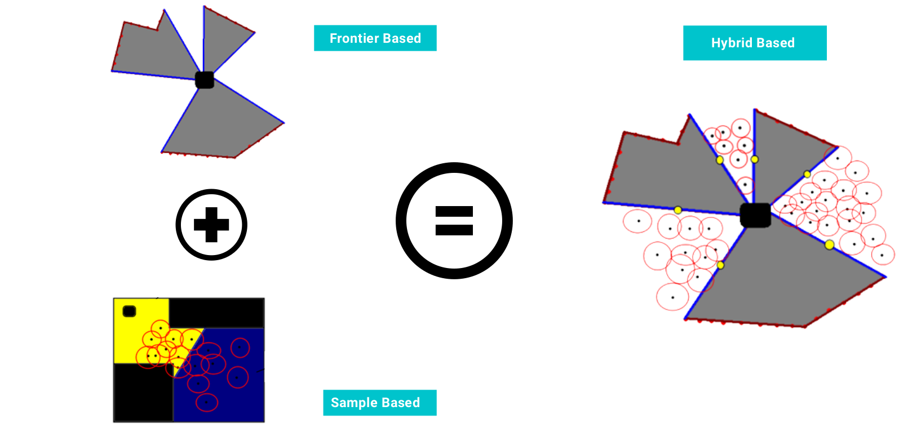
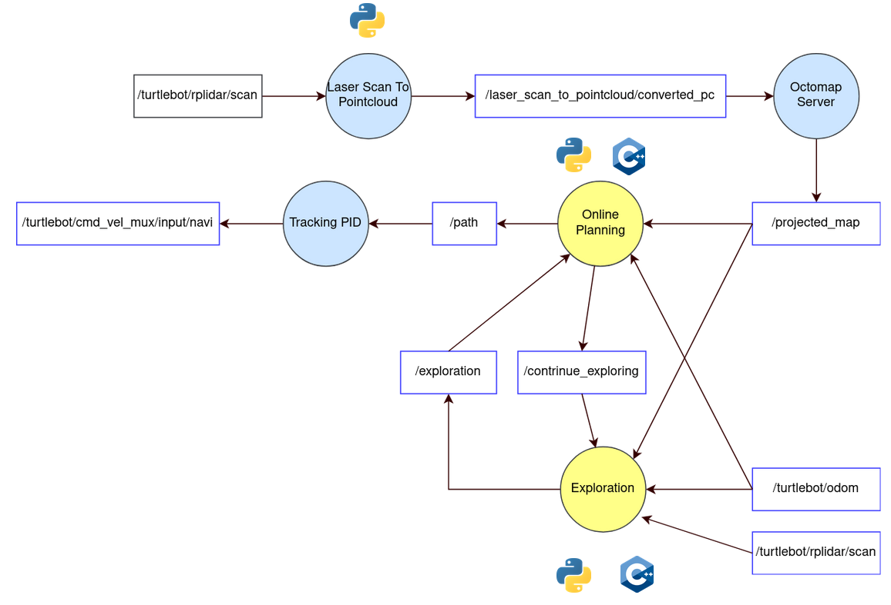

Implementation: Exploration
The exploration task is fundamental to allow robots create maps of the environment, inspect structures, search and rescure operations, among other tasks. the present implementation makes use of a combination of exploration techniques such as frontier and sample based technniques to take the advange of both and mitigate the problems that both of them face when executed individually, the proposed and implemented solution is summeried in the image shown below.
The individual algorithms that make out the full system are the following
- RRT* with kinematic constraints (implemented from scratch)
- Fast Frontier Detection (FFD) (implemented from scratch)
- DBSCAN Clustering Algorithm (using scikit-learn)
- Sample Based Information Gain Computing (implemented from scratch)
The diagram shown below describes the ROS architecture of the exploration solution. The PyBind11 library was used to create C++ wrappers for accelerating iterative intensive tasks such as the computation of the Path via the RRT* algorithm and the execution of the Fast Frontier Detector (FFD).
